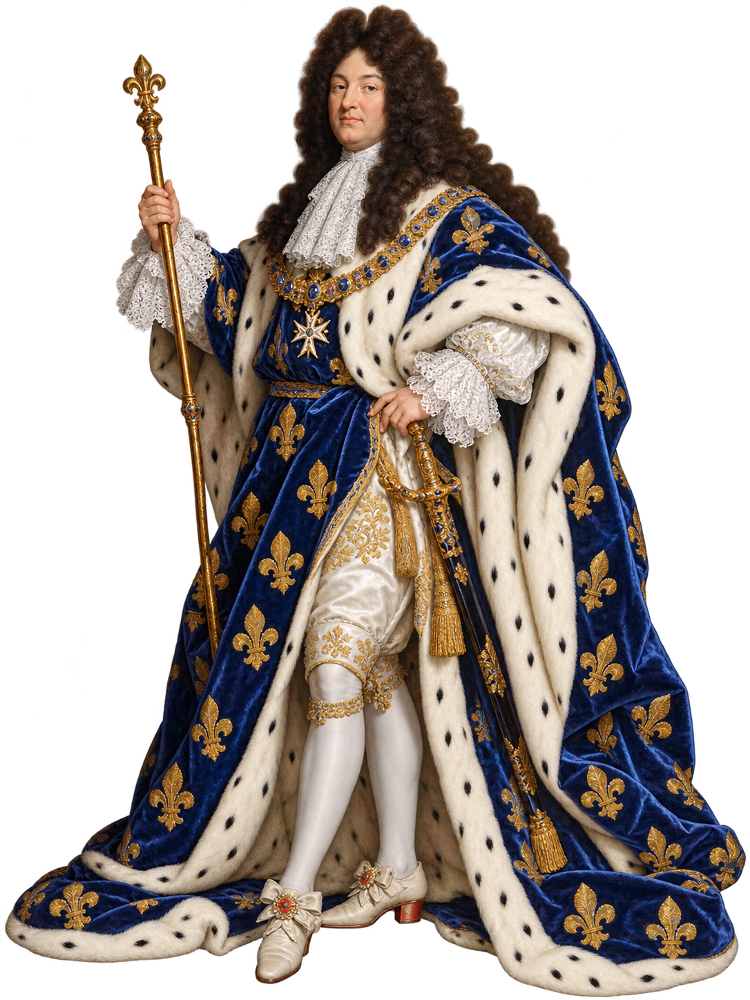
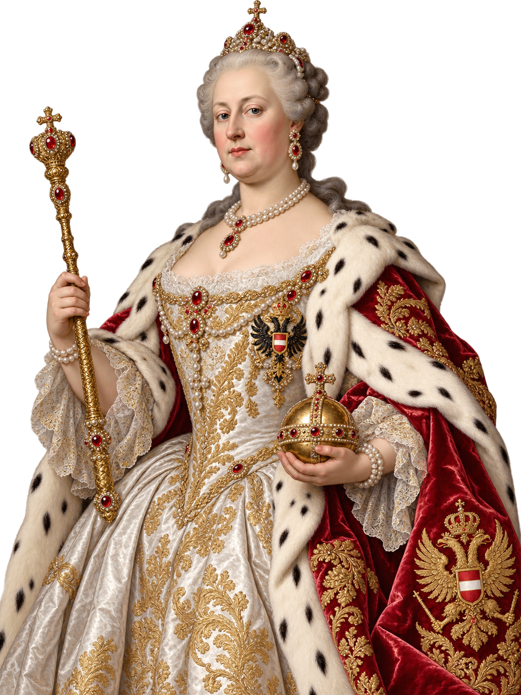

TRŮNNÍ SÁL
❦
TRŮNNÍ SÁL
Vítej ve světě panovníků
Vpravo dole leží tři staré svitky. Každý skrývá jednu důležitou informaci o baroku.
Prozkoumej všechny tři.
Absolutistická monarchie
Rozhodující moc je soustředěna v rukou panovníka.
Panovník má velmi silné postavení a jeho moc není omezena parlamentem.
Rozhodující moc je soustředěna v rukou panovníka.
Panovník má velmi silné postavení a jeho moc není omezena parlamentem.
Konstituční monarchie
Moc panovníka je omezena.
Na řízení státu se podílí také parlament.
Moc panovníka je omezena.
Na řízení státu se podílí také parlament.
ÚKOL 4
Kdo kam patří?
Přiřaď jednotlivé panovníky ke správnému typu monarchie.

Ludvík XIV. Francie
Marie Terezie habsburská monarchie
Vilém III. Oranžský
Anglie